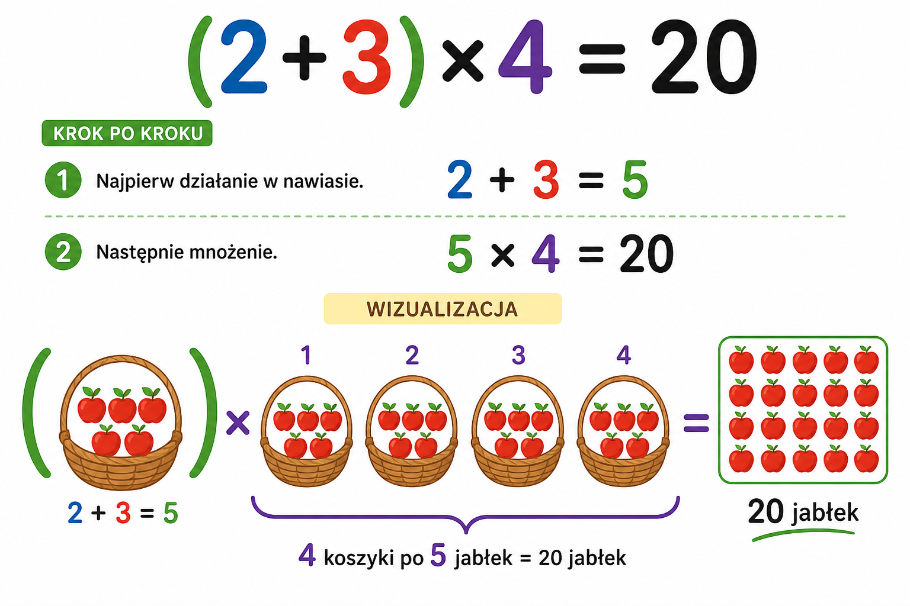

1
nawiasy
дужки

📘 Co to jest? Що це?
Nawiasy mówią: „to policz najpierw”. Bez nawiasów wynik może być inny.
Дужки кажуть: «це порахуй спочатку». Без дужок результат може бути іншим.
⭐ Zapamiętaj Запам'ятай
(2+3)×4 = 20
Порядок: дужки → степені → ×: → +−. Запам'ятай як віршик.
⚠ Nie pomyl Не плутай
- najpierw ( )od lewej „na siłę”
- (2+3)×4 = 202+3×4 = 14
✅ Przykłady Приклади
- (3+2)×4=20
- 2×(5+1)=12
- (8−3)+2=7
- bez ( ): 3+2×4=11
- nawias zmienia wynik